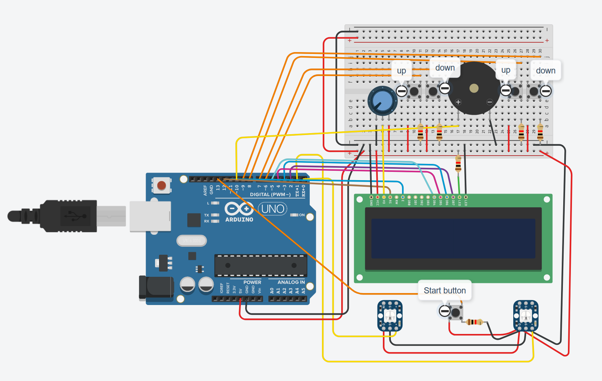
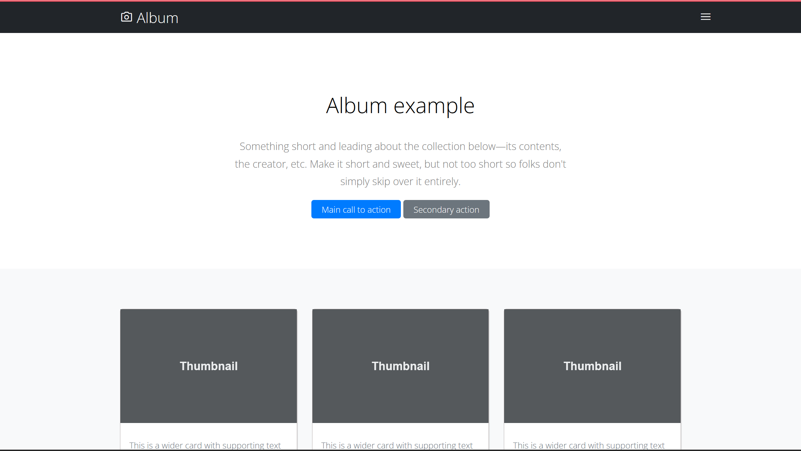
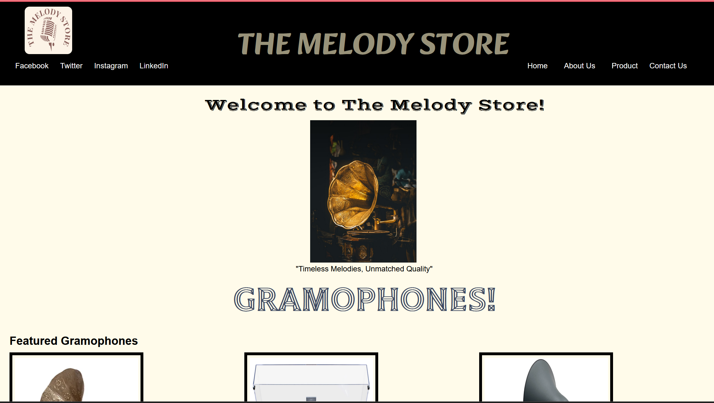
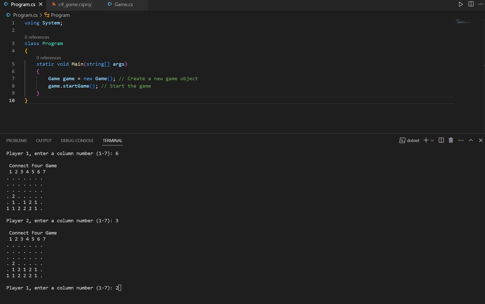

Hi, I'm Akshit Moudgil
Computer Programming student at Georgian College.
My passion lies in programming and coding, drawn to the logical challenges and algorithms involved.
My education at Georgian College has equipped me with a diverse set of technical skills,
including proficiency in HTML, CSS, JavaScript, C#, and C++, as well as familiarity with
Java and web development technologies.
As I embark on my journey to explore opportunities as a Student IT Programmer, I am driven by a commitment to continuous learning, a passion for technology, and a desire to excel in my field. I am excited to explore opportunities for me in the world of IT, where I can leverage my technical expertise and contribute to impactful projects.
Skills
| WEB DEVELOPMENT: |
|
| PROGRAMMING LANGUAGES: |
|
| BACK-END DEVELOPMENT: |
|
| NETWORK SECURITY: |
|
| PROBLEM SOLVING AND ALGORITHMIC THINKING: |
|
| COMMUNICATION: |
|
Projects
IoT-Arduino (Ping-Pong Game)
For my final submission in the first semester, I conceptualized and developed an engaging IoT project—a simulation mode Ping-Pong game using Arduino and C++ programming. Creating this Ping-Pong game allowed me to exercise creativity, technical prowess, and a passion for learning, showcasing my ability to bridge the gap between physical devices and immersive digital experiences. This project stands as a testament to my dedication to pushing the boundaries of technology and delivering exceptional results.
Open in GitHubCSS (Recreating Webpage)
I recreated a webpage initially built with Bootstrap, undertaking a valuable learning experience in utilizing CSS Flexbox and Grid for layout design and responsive styling. By reconstructing the page layout and visual elements, I honed my skills in crafting dynamic and adaptable web interfaces.Through this project, I not only gained confidence in manual styling techniques but also demonstrated my commitment to continuous learning and mastery of modern web development practices.
Open in GitHubHTML & CSS (Retro Product Website)
In my third project, I harnessed my understanding of HTML, CSS, and basic JavaScript to construct a captivating four-page website, tailored to the nostalgic theme of retro products. Developed as part of my HTML, CSS, and JS fundamentals course, this project underlined my ability to fuse creative vision with technical proficiency. Though not responsive, the site effectively encapsulated the chosen theme, effectively encapsulating the essence of retro products within a cohesive digital space.
Open in GitHubC# (4-in-a-row Game)
For my fourth project, I delved into C# programming, producing a commendable Connect 4 (or 4 in a row) game. As the capstone of my first semester's C# course, the project showcased my programming prowess and problem-solving abilities. By completing this game, I demonstrated my capacity to convert complex concepts into functional code. This terminal-based Connect 4 game stands as a testament to my analytical thinking, coding skills, and dedication to producing meaningful projects.
Open in GitHubContact Me